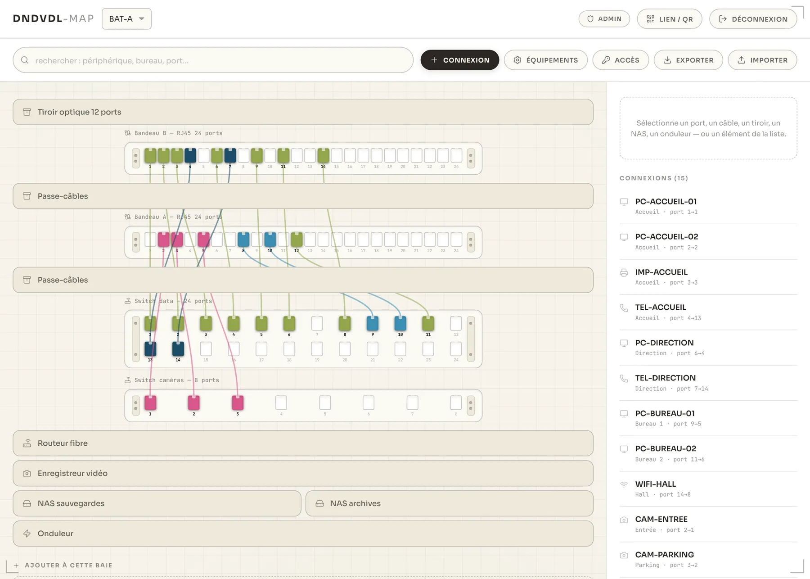
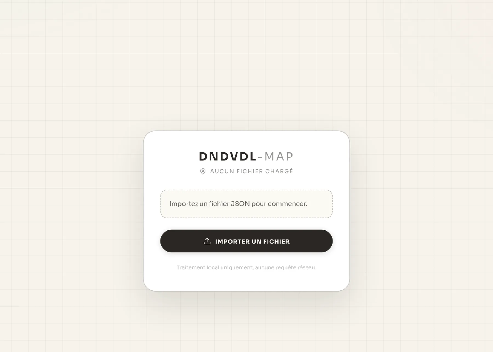
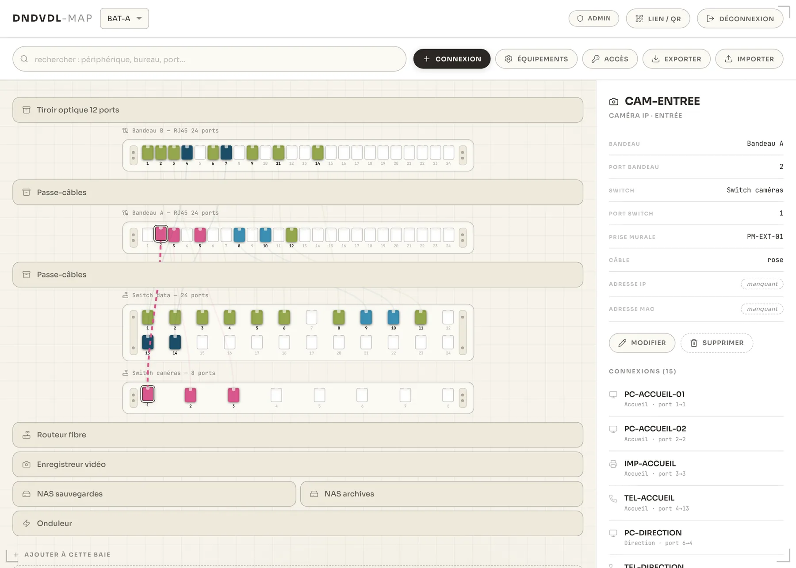
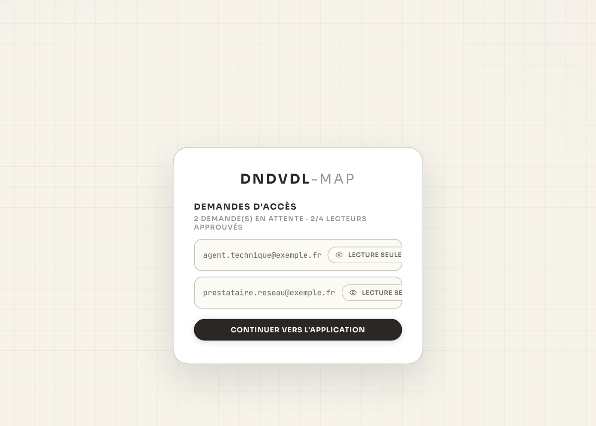
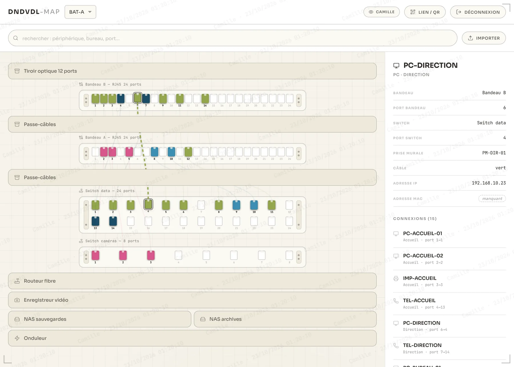
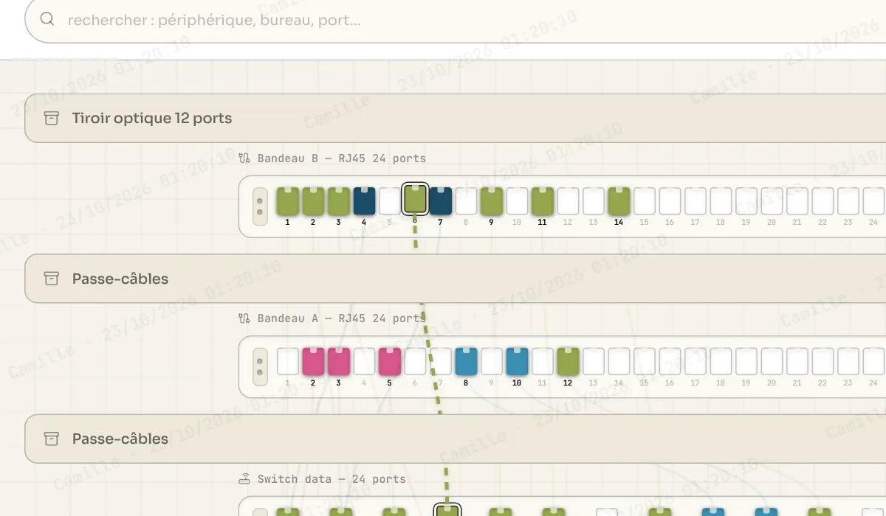
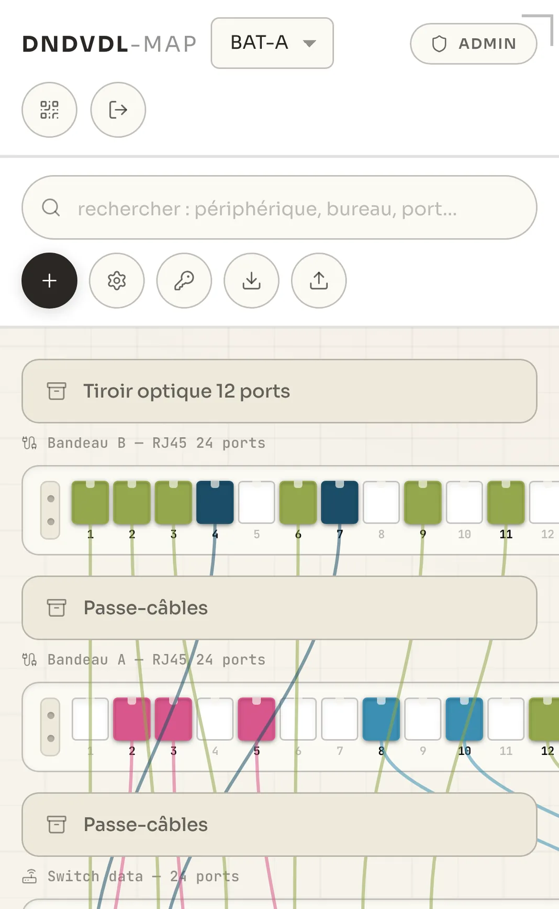

01 · Lire
La baie, telle qu'elle est câblée.
Chaque élément à sa place réelle : bandeaux de brassage, switchs, tiroirs, NAS, onduleur. Les câbles prennent la couleur de leur usage.
Infrastructure réseau · usage interne
La baie informatique, lisible par tous. Les données, gardées par vous.

Un câble débranché, et personne ne sait où il menait. Le plan de la baie dort dans un tableur que seul son auteur comprend. DNDVDL-MAP dessine chaque port, chaque câble et chaque bureau, pour que la baie se lise d'un coup d'œil, par tous ceux qui en ont besoin.
Le principe
Sur GitHub Pages, il n'y a que la structure : l'affichage, les outils, les écrans. Aucune baie, aucun port, aucune adresse.
À l'ouverture, l'application arrive sur l'appareil. Elle affiche une coquille vide qui attend un fichier.
Le fichier de la baie est lu par le navigateur, sur l'appareil. Il n'est envoyé à aucun serveur.
Les modifications repartent dans un nouveau fichier, à conserver en lieu sûr. Le seul passage par Internet concerne la connexion au compte.

En résumé
Le code de l'application, public et identique pour tous.
Uniquement ce qu'il faut pour se connecter et valider les accès.
Le fichier de la baie, importé et exporté à la main. Entre deux visites, le navigateur en garde une copie sur cet appareil, et sur lui seul.
01 · Lire
Chaque élément à sa place réelle : bandeaux de brassage, switchs, tiroirs, NAS, onduleur. Les câbles prennent la couleur de leur usage.

02 · Suivre
Un clic sur un port trace le câble jusqu'au switch et ouvre sa fiche : bureau, prise murale, ports, adresse IP. La recherche retrouve un poste en quelques lettres.

03 · Valider
Chacun peut demander un accès, mais rien ne s'ouvre avant la décision de l'administrateur : lecture seule, lecture et écriture, ou refus.

04 · Consulter
En lecture seule, la baie se parcourt librement, sans outils de modification. Le nom de la personne et l'heure s'affichent en filigrane sur tout l'écran.

Protection
En consultation, un filigrane couvre toute la baie : le nom de la personne connectée, la date et l'heure, mis à jour toutes les 30 secondes.
Une capture d'écran
Aucun navigateur ne permet de bloquer une capture d'écran ou une photo de l'écran. DNDVDL-MAP ne prétend pas le faire.
Ce qu'elle emporte
Toute capture emporte le filigrane avec elle. Si une image de la baie circule, elle désigne qui l'a prise, et quand. Cela suffit à dissuader une diffusion.
En chiffres
Données et sécurité
Savoir où passe chaque câble, c'est une information sensible. DNDVDL-MAP a été conçu autour de cette exigence.
Le contenu de la baie reste dans un fichier local, importé et exporté à la main.
Chaque compte reste en attente tant que l'administrateur ne l'a pas accepté. Ce statut est vérifié par la base, pas par l'écran.
L'administrateur choisit pour chaque personne. Il est le seul à valider ou refuser une demande.
Nom, date et heure sur chaque écran de consultation.
Les QR codes des baies sont générés sur l'appareil, sans appel à un service extérieur. L'outil n'est pas référencé par les moteurs de recherche.

Outil privé
DNDVDL-MAP n'est pas ouvert au public. L'accès se fait sur demande, après validation. Une démonstration avec une baie fictive suffit pour en juger.